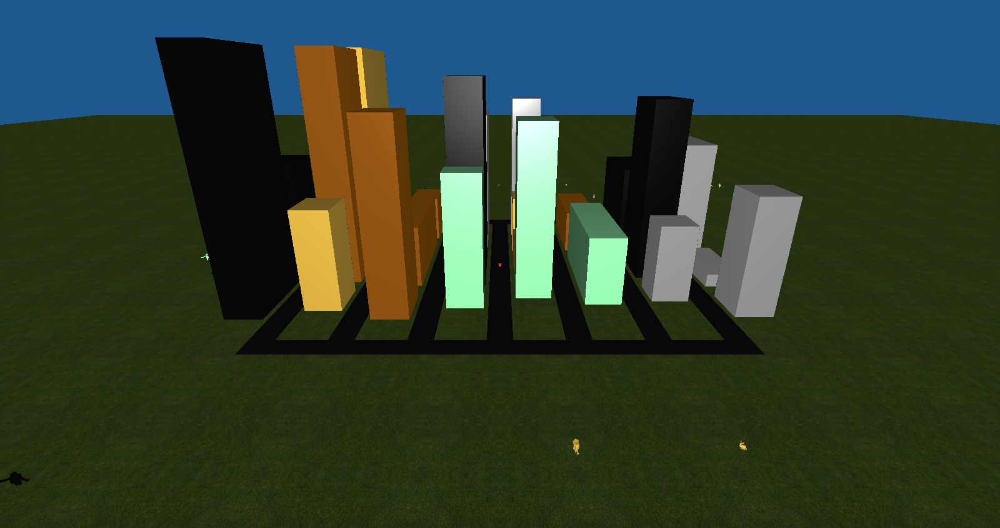
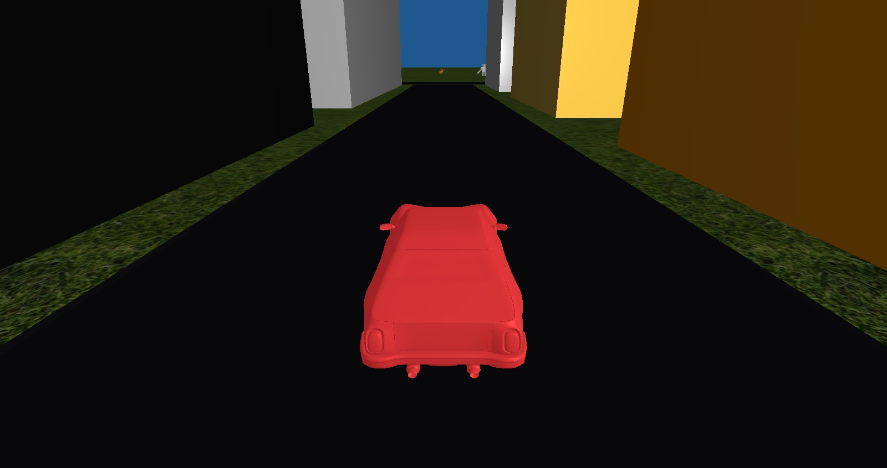
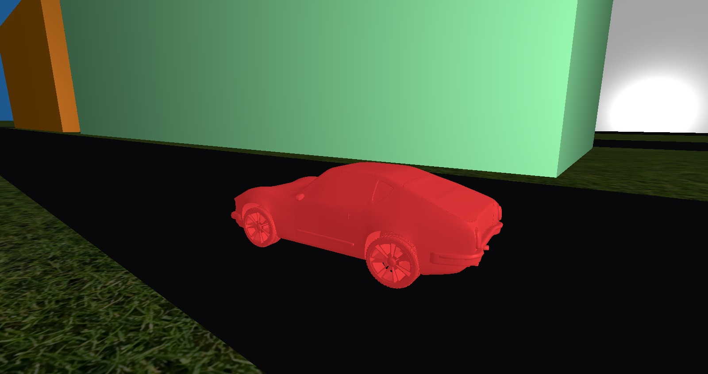
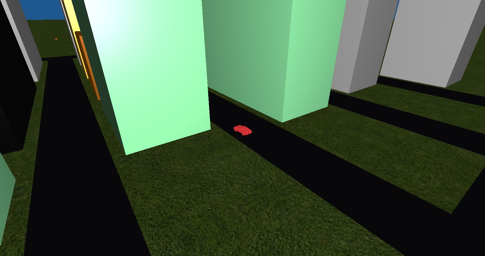
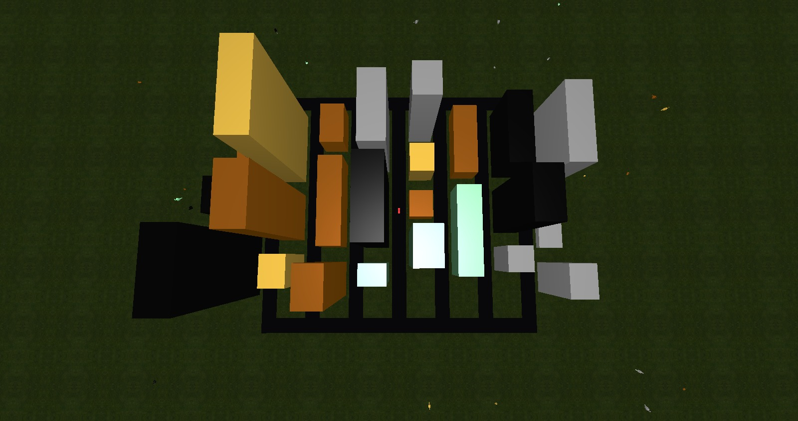
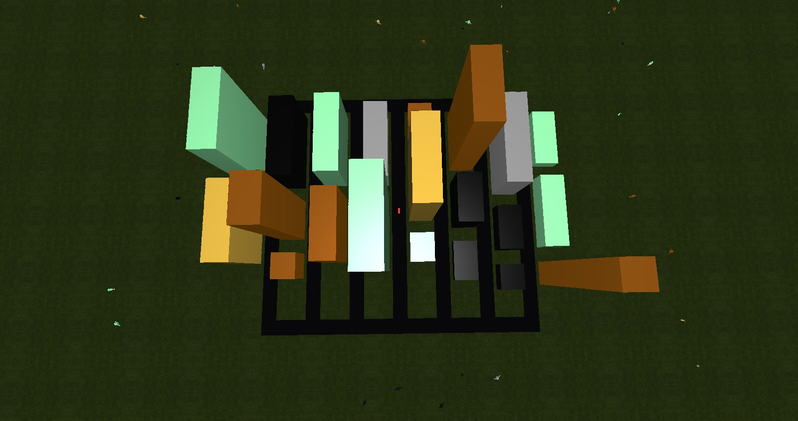
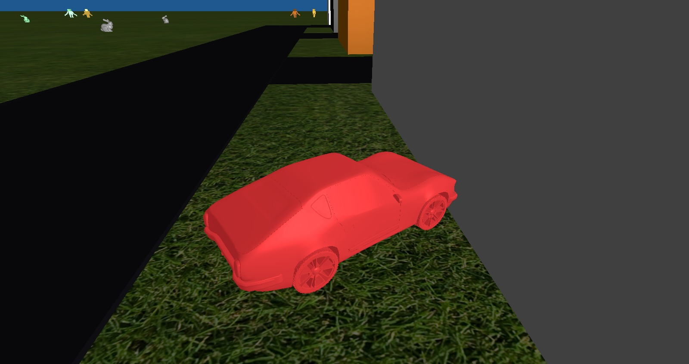
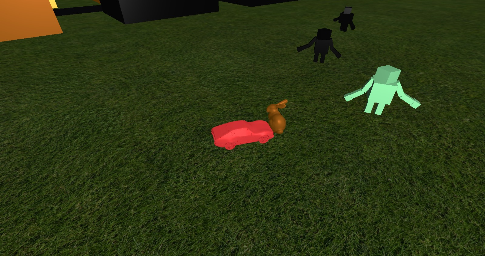

A Procedurally Generated City
By Mark McKinney
Project Description
For my CPE 471 final project, I decided to create a procedurally generated city which the user drives through.
It is a grid with rows of buildings which have random heights and lengths. The user can drive through the city with
different camera modes and cannot drive through any buildings thanks to collision detection. When it initially starts,
there is a fly-in camera for an establishing shot of the city, and then the user is free to drive wherever they'd like.
Controls
- Movement
- W - Move forwards
- S - Move backwards
- A - Turn left
- D - Turn right
- Left Shift: Boost move speed
- Camera
- T - Change camera mode (locked or free)
- Mouse - Rotate camera when in free camera mode
- P - Cancel camera fly-in or start new camera fly-in
- E - Increase camera distance
- Q - Decrease camera distance
- Tab - Reset camera distance or set to far out if already reset
- Miscellaneous
Project Implementation
The implementation of the project focused on three main aspects: managing user input, procedurally generating the city, and collision detection.
- Managing user input involved setting up callbacks for the WASD keys and the rest of the controls.
Getting the car to move smoothly was achieved by setting an integer to 1 or -1 (forward/backward or right/left) on key down
and to 0 on key up. Then, while those values were non-zero, each render would move accordingly slowly.
To get the camera input right, I had to use the car as the look-at point with the camera either being a fixed distance behind or free with
2 different rotations controlled by curson input.
- To procedurally generate the city, I created different rows for the buildings, and then did the same thing for each row.
Each row had the same starting size left, and then a random number generator is used to choose the length of the building, which is then
taken away from the remaining size left. Each building also has a random height. This was repeated until there was only a small amount of space left.
Due to the random sizes, I couldn't get textures to map properly in the time constraints of the project. Instead of textures, I just used random materials
Besides just buildings, outside of the city I randomly placed bunnies and hierarchically modeled robots which waved outside of the city on the textured grass.
Each object had a random material applied to it. Phong shading was used for all materials. For random number generation, I used the initial clock-time as the seed
and printed it out in order to allow for replaying a previous generation.
- For collision detection, I used axis-aligned bounding boxes for every object. The car, all buildings, bunnies, and robots had single bounding boxes relating to their sizes.
Since the car only drives on the XZ plane, I only had to check for collision on that plane and could leave Y out. It wasn't too hard to get the collision detection working,
but tweaking it to act correctly was a little harder. Even with tweaking values to try and get the best bounding boxes, using axis-aligned bounding boxes
for collision detection is slightly lacking due to the corners being able to collide easily when objects aren't perfectly rectangular.
References
Project Screenshots

Camera fly-in

Initial view after the fly-in

Free camera

Modified camera distance

One randomly generated city

Another randomly generated city

Building collision detection

Bunny collision detection